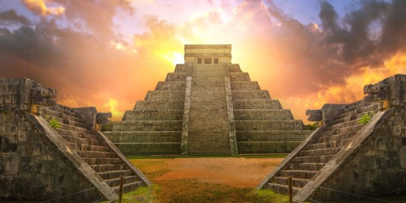

Un vistazo por la Cultura maya

En el estado de Quintana Roo existen innumerables sitios arqueológicos que te harán revivir la historia, no pierdas la oportunidad de adentrarte en el mundo maya por tu propia cuenta y conocer lo que esta gran cultura ofrece.
La civilización o cultura maya fue una de las principales civilizaciones que se desarrolló en la antigua Mesoamérica. Cultura muy destacada por sus elaborados sistemas de escritura, numéricos y por el uso del calendario, así como por su impresionante arte y arquitectura.
Los antiguos mayas son bien conocidos por sus escritos, de los cuales se puede leer una gran parte pues fueron descifrados luego de haber sido encontrados, así como por sus avanzados cálculos matemáticos, astronómicos y calendáricos.
La Cultura Maya habitó la región de los bosques tropicales de las actuales Guatemala, Honduras y Península de Yucatán (sur del actual México).
Ubicación de la Cultura Maya
Ubicación de la Cultura Maya es una región condicionada por sus condiciones climáticas ya que sufre una larga estación seca que abarca unos ocho meses cada año. Además, abundan las rocas calizas, las aguas se filtran y las corrientes se hacen subterráneos. El agua es escasa y por este motivo se debe recurrir a los pozos a fin de hacerla emerger. En este contexto geográfico se desarrolló la Civilización maya, que ocupaba unas tierras bajas de densos bosques tropicales.
Características de las Cultura Maya
En lo Social los mayas estaban divididos en 3 Clases (Familia real, Servidores del Estado y Agricultores).
La economía se basaba en la agricultura, principalmente de maíz, frijoles y tubérculos. Sus técnicas de irrigación del suelo eran muy avanzadas para la época. Practicaban el comercio de mercancías con pueblos vecinos y en el interior del imperio.
Se levantaron pirámides, templos y palacios, demostrando un gran avance arquitectónico. La artesanía también se destacó: hilado de tejidos, uso de tintas en tejidos y ropa.
La religión de este pueblo era politeísta, pues creían en varios dioses ligados a la naturaleza.
Elaboraron un eficiente y complejo calendario que establecía con exactitud los 365 días del año.
Así como los egipcios, usaron una escritura basada en símbolos y dibujos (jeroglíficos). Registraban acontecimientos, fechas, recuento de impuestos y cosechas, guerras y otros datos importantes.
Desarrollaron mucho las matemáticas, con destaque para la invención de las cifras decimales y el valor cero.
Esta Cultura se basaba económicamente en la agricultura del maíz, producción realizada por campesinos que vivían en los alrededores de las ciudades y estados.
La sociedad estaba rígidamente dividida en tres clases a las que el individuo pertenecía desde el nacimiento. Primero, la familia real, incluyendo ocupantes de los principales puestos del gobierno y los comerciantes. A continuación, servidores del Estado, como dirigentes de las ceremonias y responsables de la defensa y cobranza de impuestos, en la capa más baja, los brazaletes y agricultores.
haga click para buscar direccion de la cultura maya